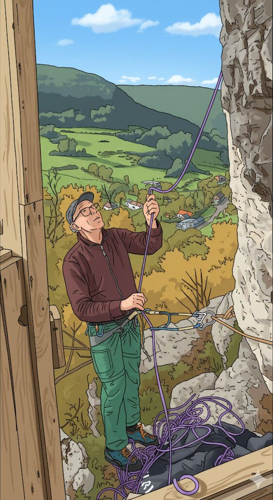

Les petites voies

- Relais chaîné
Touchez une voie pour voir ses infos, appui long pour la retrouver dans la liste.
-
1
Turlututu
6c+Petit pilier ardu.
Luc Pillet
-
2
Chapeau pointu
7a+Pilier ponctué d’un rude pas de bloc.
Jean-Yves Salin
-
2’
Variante de "Chapeau pointu"
7aUn départ technique suivi d’une fine fissure.
Jean-Yves Salin
-
3
Lorleï
7aUn pas un peu morpho dans la dalle avant de traverser à gauche.
René Hopf
-
3'
Lorleï (Variante)
7bSortie par la voie #4.
René Hopf
-
4
Welcome to paradise
7cUn départ très dur (prendre une réglette main gauche sous un bac de « Loreleï »).
René Hopf
-
5
Les fondus
5cBelle dülfer, les pieds sur des pentes ! Pédagogique !
Inconnu
-
6
L’échaudé
4cSympa en sortant à droite.
Inconnu
-
7
La confiance règne
3cInitiation.
Inconnu
-
8
Via ferrata
3aInitiation, fissure en écarts.
Inconnu
-
9
L’Évrest
4cPilier sympa.
Jean-Yves Salin
-
10
Tu montes, chéri ?
6aDépart physique, très belle fissure ensuite. Traverser à droite pour sortir.
Jean-Yves Salin
-
11
L’embrouille
6b+De bonnes prises mais une lecture peu évidente.
Mathieu Vigot
-
12
La météo
5a« Grande » classique en dièdre.
Inconnu
-
13
La MJC
5b+Petite fissure physique.
Inconnu
-
14
La calva
5cUn beau mur.
Inconnu
-
15
La techno
3aInitiation.
Inconnu
-
16
Pompier bon œil
5bTout se joue sur le pas de départ !
Jean-Yves Salin
-
17
La voie des filles
4bInitiation.
Jean-Yves Salin
-
18
Solid’rock
3aInitiation.
René Hopf
-
19
Face cachée
4cPetit mur raide.
Jean-Yves Salin
-
20
Y a un début à tout
3cInitiation sur un rocher « tout neuf » (pour l’instant).
Jean-Yves Salin
-
21
Escalier « D »
4aIdem.
Jean-Yves Salin
-
22
Gaspard des montagnes
4bDe beaux mouvements en fissure.
Jean-Yves Salin
-
23
La p’tite vicieuse
6bMur raide, gestuelle agréable. Possibilité de faire en moulinette le mur à droite : technique, 7b.
Jean-Yves Salin
-
24
Tétanite
6a+Mur raide sur prises bidouillées.Intéressant tout de même.
René Hopf, Jean-Yves Salin
-
25
Mèche courte
7bMême départ que la précédente puis on traverse à droite pour rejoindre une écaille. Mais où sont les pieds ?!
Jean-Yves Salin
-
26
Le sort en est jeté
7c+Voie oldschool, anthologie de la non-prise. J’adore !
Jean-Yves Salin
-
27
Sortie de secours
7aUn redoutable petit bombé final !
René Hopf
-
28
Une ombre au tableau
7a+Rude dalle et méchant petit dévers ensuite !
René Hopf
-
29
Sourire nacré devant l’azur
7b+3 points, 3 pas de dalle splendides. Les grands ne seront pas forcément à la fête !
René Hopf
-
29'
Variante #29
7a+/7bTraverser à gauche vers « Une ombre… » et en rejoignant la fin de « Sortie de secours » : Bel itinéraire homogène.
René Hopf
-
30
Véronorine
6cTout va bien et puis… !
René Hopf
-
31
Quezal
5aFissure cool.
René Hopf
